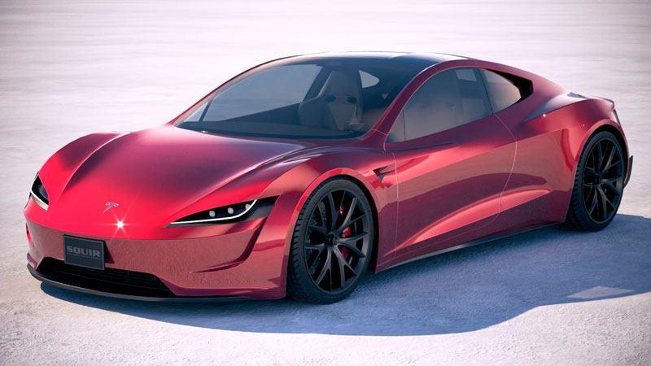
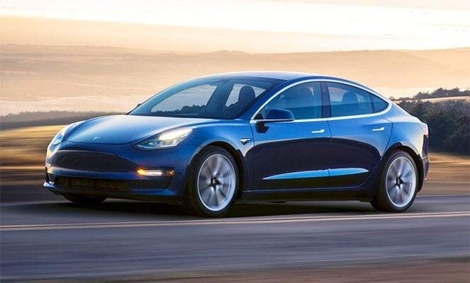
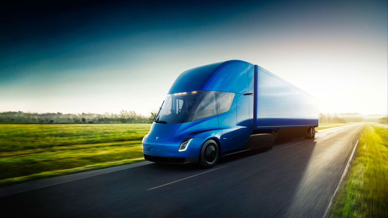

Модельный ряд электрокаров Tesla
Модельный ряд Tesla довольно широк как для молодой компании. Он состоит из пяти моделей, которые уже производятся серийно либо представлены в виде прототипов. Если верить статистике, то за последний год продажи электрокроссоверов выросли на два процента. Учитывая этот факт, в компании Tesla снова заговорили о новой модели электрического кроссовера SUV, которая, по неофициальным данным, будет называться Tesla Model Y. Примечательно, что компания планирует выпускать данную модель на той же базе, что и бюджетный седан Model 3. Что из этого выйдет, мы узнаем только после представления концепта. В отличие от Model X, новый электрокроссовер будет более доступным по цене. В планах компании – производство пикапа и микроавтобуса с электрическим приводом. Однако все это только планы. Поэтому давайте подробнее рассмотрим те модели, которые уже имеются.
-
Roadster от Tesla
«Тесла Роадстер» впервые был представлен в 2008 году и позиционировался как первый электрический спорткар. Автомобиль несколько раз обновлялся, причем изменениям подвергалась как «начинка», так и внешнее оформление. В 2017 году был представлен прототип нового «Роасдтера», который позиционировался как самый быстро разгоняющийся серийный автомобиль. Производство запланировано на 2020 год.
Особенностью данной модели является его техническая сторона. По заявлению производителя, автомобиль оснащен тремя электроприводами (один на передней оси и два на задней), то есть электрокар является полноприводным. Суммарная мощность не уточнялась, однако крутящий момент достигает 10 000 Hm. Разгон до 100 км/ч занимает всего 1,9 секунды, а до 160 км/ч – 4,2 секунды. При этом максимальная скорость превышает 400 км/ч.
-
Model S
Tesla Model S – это седан премиум класса, прототип которого был представлен в 2009 году. С того времени модель несколько изменилась, и в результате мы имеет неплохой седан, который полностью соответствует своему статусу. Просторный салон с отделкой высококачественными материалами делает поездки весьма комфортными. Не забыли и о технической стороне автомобиля. Модель S оснащается электродвигателем мощностью 362 л.с., который способен разогнать автомобиль до 100 км/ч за 2,7 секунды.
Модель имеет несколько комплектаций, которые в основном отличаются емкостью батареи:
- P65D – 65 кВт/ч.
- P85D – 85 кВт/ч.
- P100D – 100 кВт/ч
Максимальный запас хода в комплектации P100D ограничивается 507 км.
-
Model X

Tesla Model X – это полноразмерный электрический кроссовер, прототип которого впервые был представлен в 2012 году в Лос-Анджелесе. Автомобиль в базовой комплектации оснащается двумя электроприводами. При этом существует три варианта комплектаций:
- 75D
- 90
- P90D
Цифры в названии комплектации указывают на емкость батареи. Индекс D говорит о том, что в машине установлено два электропривода (Dual Motor).
Первые два варианта отличаются лишь емкостью батареи. До 100 км/ч они разгоняются за 4,8 секунды. А вот третья версия P90D имеет двигатели увеличенной мощности, которая достигает 772 л.с. Разгон до 100 км/ч занимает всего лишь 3,2 секунды.
Такие показатели имеют далеко не все спорткары и суперкары, не говоря уже о серийных кроссоверах.
-
Model 3
Tesla Model 3 – это долгожданный бюджетный седан с электрическим приводом, который впервые был представлен 2016 году и уже по предзаказам за первые полгода побил все рекорды по продаваемости.
Серийное производство модели началось во второй половине 2017 года. Несмотря на то, что она является бюджетной, в отделке салона используются качественные натуральные экологические материалы. При этом электромобиль обладает довольно приятными техническими характеристиками:
- Мощность мотора – 258 л.с.
- Разгон до 100 км/ч – 5,8 секунды.
- Запас хода 350 км.
-
Semi Truck
Semi Truck – это электрический грузовик «Тесла», прототип которого был представлен в 2017 году. Серийное производство запланировано на 2022 год, однако электрогрузовик уже можно заказать, оставив предоплату в размере 20 000 долларов США.
Тягач относится к 8 классу по американским стандартам, с максимальной массой более 15 тонн. Но главной особенностью грузовика является его внешний дизайн (аэродинамика на уровне спортивных автомобилей) и технические характеристики.
Грузовик на одном заряде способен преодолеть 800 км. При этом разгон до 100 км/ч занимает 5 секунд без полуприцепа и 20 секунд с полной загрузкой в 36 тонн. Полностью батарею можно зарядить за 40 минут, а за 30 минут батарея сможет зарядиться до 80%.